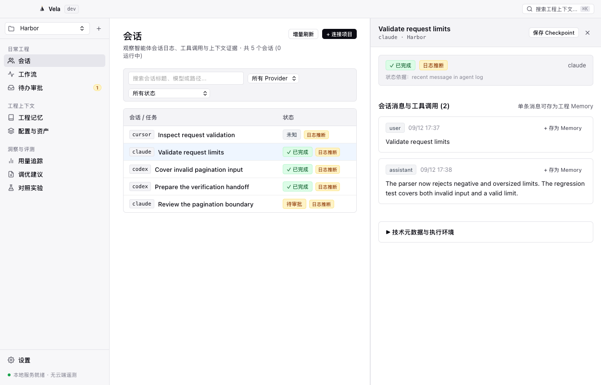

项目记忆：保留值得带到下一次的约束
工程师常见困扰：项目的构建约定、测试前置命令、环境排错技巧往往沉淀在个人脑中或无数会话中。每次开启新会话都不得不重新叮嘱 Agent；更糟糕的是，当构建规则调整后，旧记忆容易变成隐形干扰，难以追溯与下线。
01
从消息提取或手工提议 Candidate
从已记录的会话证据中一键提取工程事实（如“提交前运行 python3 scripts/check-repository.py”），或手动创建记忆提议。所有初始条目均默认为
Candidate 状态，保留创建来源会话 ID 与提取时间戳。
02
核对来源与归属 Scope
每条记忆归属于明确的作用域（如
test-practices、build-system 或 workspace-rules）。Private Library 严格独立保存，绝不混入项目记忆流或提示词检索上下文。
03
人工审阅与状态激活（Active）
遵循“已保存不等于已对模型生效”的原则。工程师对内容事实进行审校与修改后，手动将其变更为
Active 状态。未经人工审核的 Candidate 绝不参与上下文召回。
04
受限预算召回与显式归档（Supersede / Archive）
通过 MCP 工具或 CLI 在受控的 Token 预算内进行纯本地词面召回；当项目规范演进时，可显式指定新记忆替代旧记忆（
Superseded）或将其彻底归档（Archived），避免过时事实持续污染提示词。

实际 macOS 原生界面 (0.1.0-preview.2) · 合成示例数据
功能边界与已知限制
- 词面与 Scope 索引检索：Vela 采用纯本地 SQLite 进行作用域、关键词与状态词面匹配检索，无任何远程向量数据库、Embedding API 或外部云端持久化依赖。
- 模型采纳需独立证据：将 Active 记忆按预算召回并注入上下文，并不等同于下游 Coding Agent 能够 100% 正确理解并严格执行约束。模型遵循能力取决于任务复杂度与 Harness 本身。
- 私有库严格隔离：Private Library 仅用于本地存放个人敏感信息与私有参考笔记，严格与项目记忆隔离，绝不暴露给 Agent 检索协议或模型 Prompt。